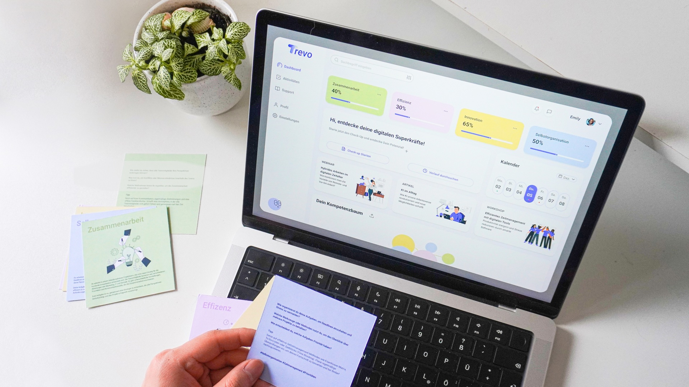
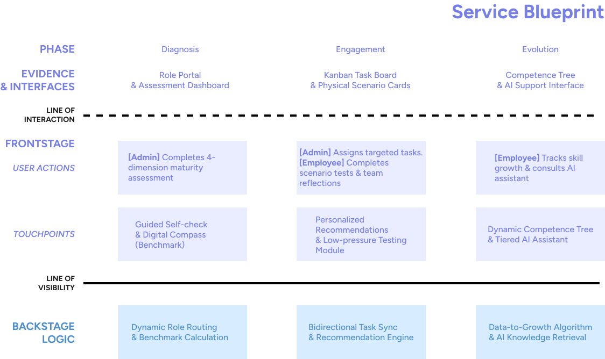

Trevo
Your digital transformation partner.
Overview
A strategic service design initiative equipping SMEs for the digital age. Trevo integrates personalized self-assessments with intuitive task management to redefine corporate upskilling.
Defining the Friction
SME transformation is often stifled by prohibitive consultancy fees and widespread "digital anxiety" among employees, compounded by a lack of transparent, visualized growth paths.

Simplifying the Transition
To provide an affordable and approachable alternative to traditional consulting, Trevo utilizes a hybrid ecosystem. By mapping digital maturity, it aligns managerial goals with self-led learning—providing a clear, low-pressure roadmap that empowers teams to benchmark progress without the usual uncertainty.
Fostering a Dual-Driven Synergy
Transformation stalls when corporate goals disconnect from individual needs. Trevo bridges this gap by fostering a synergy between strategic oversight and personal empowerment, leveraging AI-assisted guidance to help resource-constrained SMEs navigate complex changes at a sustainable, manageable pace.

Managerial Strategy
Managers orchestrate growth by assigning internal resources alongside system-generated recommendations, allowing small teams to maximize their training impact without relying on expensive external consultants.

Employee Autonomy
Employees drive their own advancement via an AI Assistant that acts as a supportive coach, providing tiered guidance to help resolve technical or operational challenges as they arise in their daily workflow.

Crafting the Tangible Identity
To minimize resistance to external tools, I developed a physical identity that grounds Trevo within the workspace. Tangible touchpoints ease the digital transition, helping the workforce adopt new habits as a seamless part of their daily routine.
Scan the code to explore the interaction flow from different user perspectives and see the project in action.